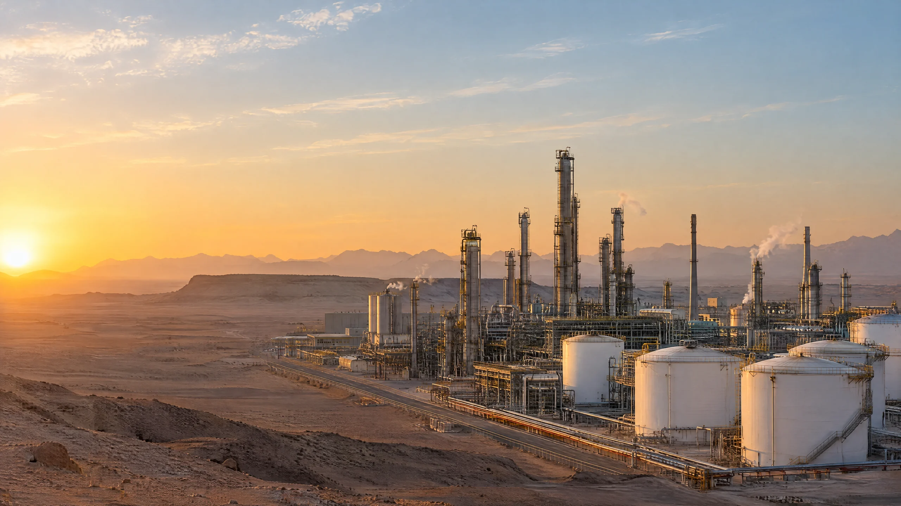
استشارات بيئية معتمدة · الرياض
الالتزام البيئي، نُنجزه بإتقان.
دراسات وتراخيص وتقارير للمنشآت العاملة وفق الأنظمة البيئية في المملكة العربية السعودية.
نقيس وفق الطريقة التي يحددها ترخيصك
الهواء والمياه والتربة والضوضاء، وفق معايير معتمدة.
التراخيص · الرصد · التقارير
جهة استشارية واحدة، من أول ترخيص حتى كل تجديد.
نشأنا لمواكبة الأنظمة البيئية الجديدة في المملكة
شركة استشارات بيئية مقرها الرياض، تأسست لتلبية الطلب الذي أوجده تسارع الأنظمة البيئية في المملكة، وتجمع بين الكفاءات السعودية والخبرة الدولية.
يتنوع عملاؤنا بين الجهات الحكومية والمنشآت الصناعية والتجارية، في قطاعات النفط والغاز، والبتروكيماويات، والتصنيع، والطاقة والتحلية، والأسمنت، والأغذية، والزراعة، والتطوير العمراني.
رسالتنا
تقديم حلول بيئية مبتكرة وفق أعلى معايير الجودة والسلامة، بما يضمن الالتزام الكامل لعملائنا.
رؤيتنا
دعم السياسات الوطنية وتطوير القطاع البيئي في المملكة ليكون مرجعاً إقليمياً في الابتكار الأخضر.
متوافقون مع رؤية 2030
مجتمع حيوي
بيئة أنظف وأكثر صحة ترتقي بجودة الحياة في أنحاء المملكة.
اقتصاد مزدهر
نمو صناعي مسؤول من خلال إدارة ملتزمة للنفايات والبيئة.
وطن طموح
تعزيز ممارسات الاقتصاد الدائري والحوكمة البيئية.
حلول بيئية متكاملة
من البر إلى البحر، دراسات معتمدة وتراخيص ورصد يُبقي المنشآت ملتزمة في أنحاء المملكة.
نتولى أي التزام
ثلاثة مسارات خدمة تغطي دورة الالتزام البيئي بالكامل.
مرّر فوق البطاقة للمعاينة · انقر لفتح القائمة الكاملة
احصل على ترخيصك دون أن تخسر ربع عام
معظم التأخير ليس تقنياً، بل سببه تصنيف خاطئ للنشاط أو ملف تنقصه دراسة داعمة واحدة. نبدأ بالتصنيف، ثم نبني ملف التقديم حول ما ستطلبه الجهة المراجعة فعلاً.
التراخيص البيئية

لا ارتباك بعد اليوم عند التفتيش
يطلب المفتشون السجل البيئي أولاً. نحافظ على سجلك محدّثاً، وننفذ القياسات التي يحددها ترخيصك، ونقدّم التقارير الدورية في موعدها، فيصبح التفتيش مراجعةً للمستندات لا حالة طوارئ.
الرصد والتقاريرقرار التجديد يُحسم قبل تقديم الطلب بوقت طويل
مراجعة التجديد تفحص مدة الترخيص كاملة لا الطلب وحده. والعملاء المشتركون في التقارير المستمرة يجددون تراخيصهم من سجل حُفظ طوال المدة، لا من سجل جُمع ورُوجع في اللحظة الأخيرة.
اقرأ دليل التجديد
إرشادات عملية حول
الأنظمة البيئية السعودية
ما تتطلبه الأنظمة فعلاً، مكتوباً لمن يلتزمون بها: فئات التراخيص، ومواعيد التقارير، ونتائج التفتيش، وكيفية التعامل معها.
اقرأ جميع المقالات كتبها ممارسون
كتبها ممارسونلا مسوّقون
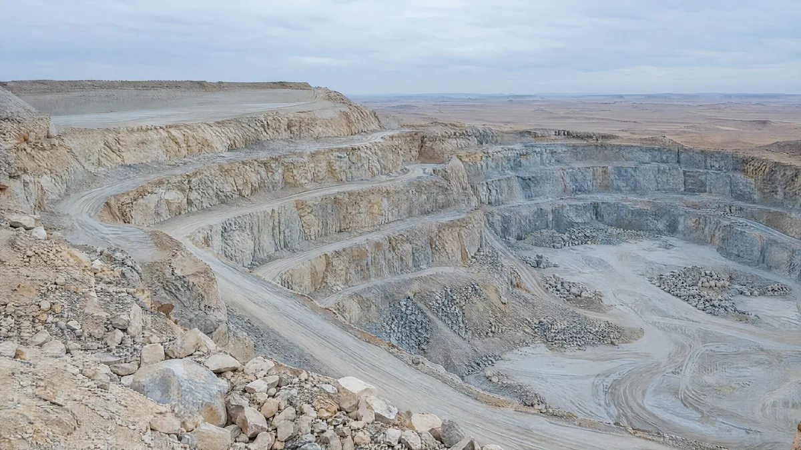
01 / 04 المحاجر والتعديندراسات المحاجر وإعادة التأهيل: الالتزام الذي يدوم بعد انتهاء الموقع
تلتزم مواقع الاستخراج بإعادة التأهيل قبل سنوات من استحقاقه، ولا يسقط هذا الالتزام بإغلاق المحجر أو توقفه أو انتقال ملكيته.
اقرأ المزيد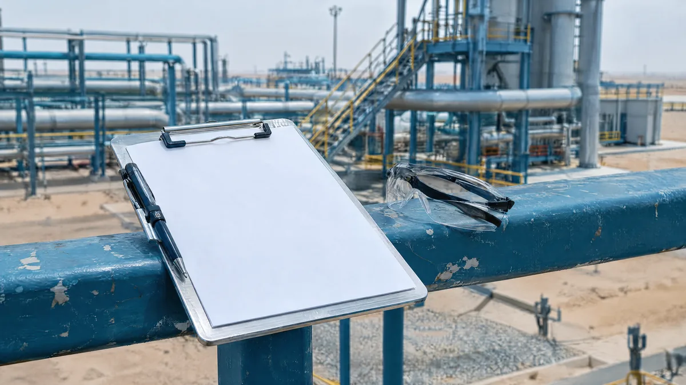
02 / 04 التفتيشالمخالفات البيئية الست الأكثر رصداً من قِبل المفتشين في المملكة
تقع معظم الملاحظات التي نراها ضمن فئات محدودة، وأغلبها مشكلات في التوثيق لا إخفاقات هندسية.
اقرأ المزيد 03 / 04 التجديدتجديد ترخيصك البيئي: ابدأ قبل ستة أشهر
التجديد ليس إجراءً شكلياً. تراجع الجهة سجل التزامك، والترخيص المنتهي يضعك في حالة مخالفة فوراً دون مهلة فعلية.
اقرأ المزيد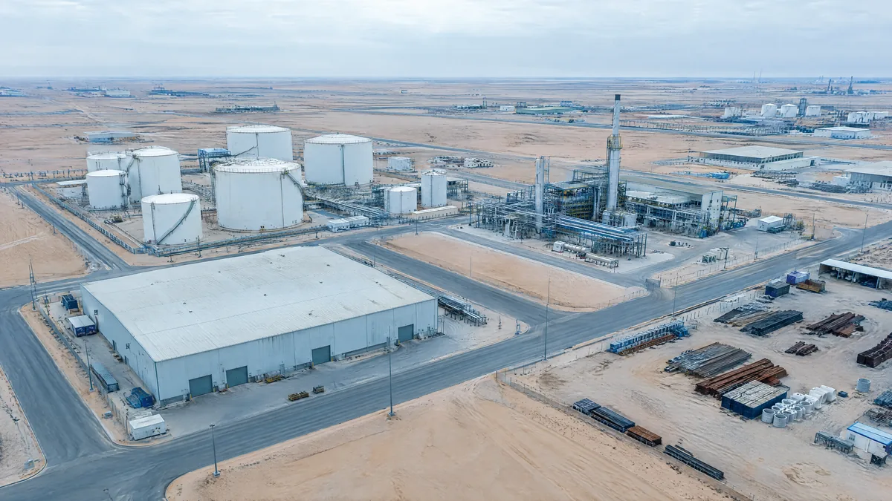
04 / 04 التراخيصفئات الترخيص البيئي في المملكة العربية السعودية: أيها ينطبق عليك
تحدد الفئة الأولى أو الثانية أو الثالثة الدراسات المطلوبة والتكلفة ومدة الترخيص، والتصنيف الخاطئ لنشاطك هو أكثر الأخطاء كلفة مما نراه.
اقرأ المزيدلست متأكداً من التراخيص التي تنطبق عليك؟
أجب عن ثلاثة أسئلة سريعة لترى ما يُطلب عادةً من منشأة مثل منشأتك.
التزام بيئي دون تخمين
منهجية عمل واضحة من أول زيارة للموقع حتى التقارير التي تُبقيك ملتزماً دورة بعد دورة
تحديد نطاق المشروع
زيارة للموقع ومراجعة تنظيمية، ثم نطاق عمل مكتوب يُتفق عليه قبل بدء أي عمل ميداني.
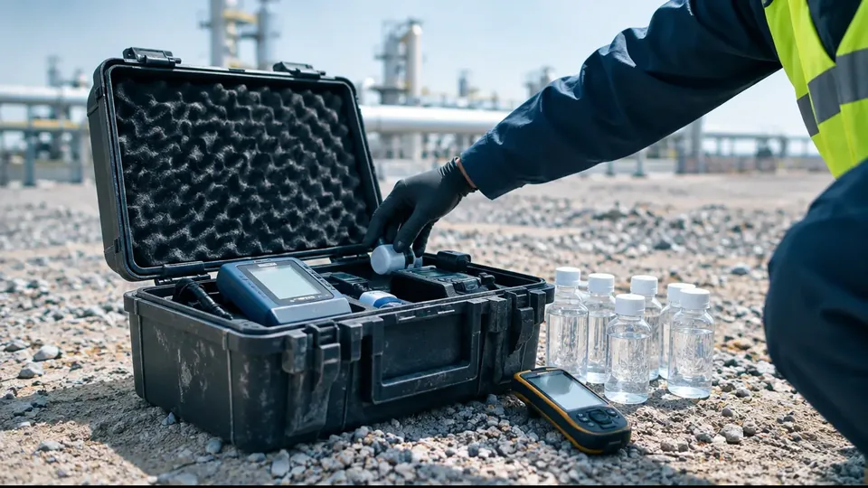
تقييم الموقع
استطلاع ميداني للظروف القائمة ومواقع المستقبِلات المعنية بنشاطك.
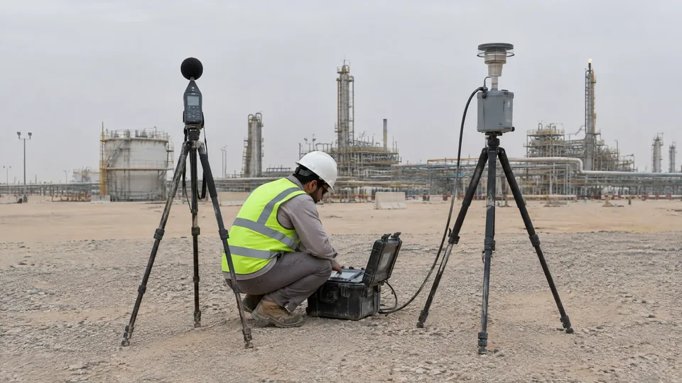
القياس الميداني
أخذ العينات والرصد وفق المعيار الذي يشترطه ترخيصك.
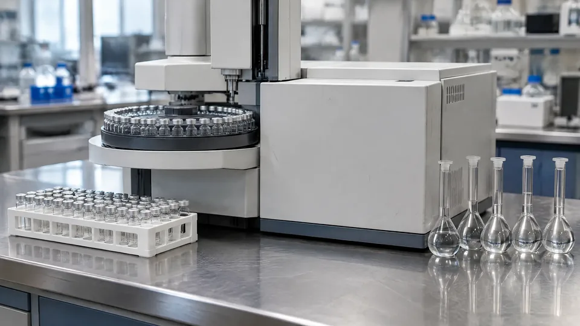
التحليل المختبري
التحليل والتحقق من صحة البيانات مقارنةً بالحدود المسموح بها.
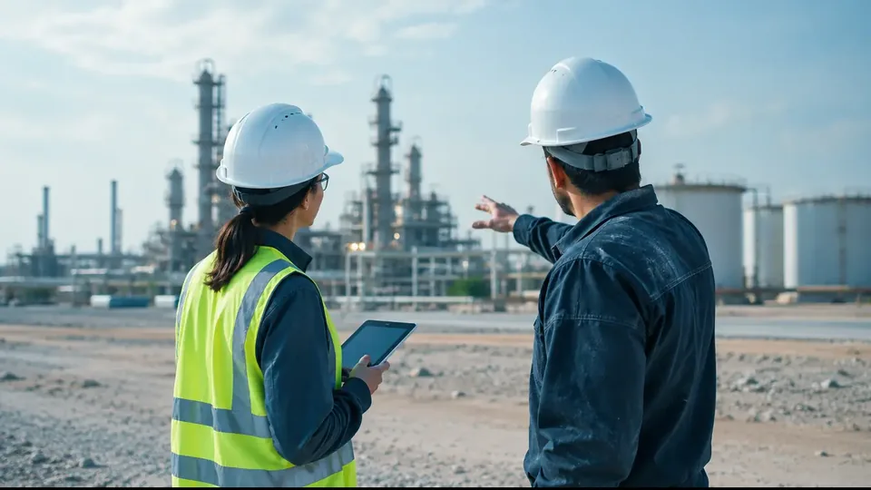
التقارير
تقرير جاهز للتقديم، ثم متابعة السجل البيئي بما يُبقيك ملتزماً دورة بعد دورة.
معتمدون حيث يهم الاعتماد
لا تُقبل ملفات التراخيص إلا من جهات معتمدة، وكل اعتماد أدناه يذكر الجهة التي أصدرته.
 ترخيص الاستشارات البيئيةNCEC
ترخيص الاستشارات البيئيةNCEC مقدّم خدمات إدارة النفاياتMWAN
مقدّم خدمات إدارة النفاياتMWAN مقدّم خدمات معتمدالهيئة الملكية للجبيل وينبع
مقدّم خدمات معتمدالهيئة الملكية للجبيل وينبع المختبرات والتفتيشIAS
المختبرات والتفتيشIAS ISO 14001الإدارة البيئية
ISO 14001الإدارة البيئية ISO 9001 و45001الجودة والصحة والسلامة
ISO 9001 و45001الجودة والصحة والسلامةتقارير تقبلها الجهات الرقابية
معتمدة حكومياً ومتوافقة مع متطلبات NCEC، ليجتاز ملفك المراجعة من المرة الأولى.
مصمَّمة حول منشأتك
حلول تُصاغ وفق قطاعك ونشاطك، لا قوالب عامة.
شريك واحد لكامل الدورة
التراخيص والدراسات والتقارير تحت مسؤولية فريق واحد.
شركاؤنا وعملاؤنا
جهات في قطاعات الصناعة والطاقة والبنية التحتية والقطاع الحكومي تعتمد على عملنا البيئي.


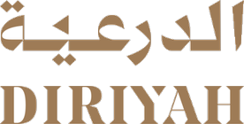
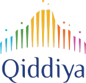


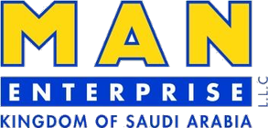
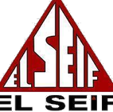
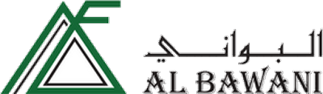
كل قطاع خاضع للتنظيم
نُكيّف استراتيجية الالتزام وفق التزامات قطاعك ومخاطره ودورات التفتيش فيه.